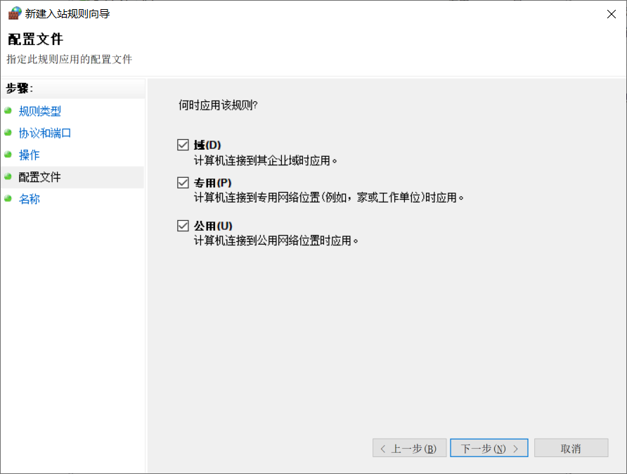

Tomcat服务器部署SSL证书
有时候项目需要服务器的协议是https协议，比如微信小程序的后台接口；这个时候就不得不把服务器协议修改为https。https和http有什么区别呢？区别就在于https比http多一个SSL证书，下面就是怎么获取SSL证书和怎么部署到服务器上。(唉，这也是当年自己踩了两个小时坑踩出来的啊！)
1. 获取SSL证书
因为当初我是服务器是在阿里云上租的，所以SSL证书也是在阿里云上面获取的，当然，不要想着我会用钱去买这玩意，主要是太贵了，不过阿里云也算良心，能在上面免费获取一个一年的SSL证书。在这免费获取阿里云SSL证书，打开连接之后选择证书对比，里面有一个免费证书可以立即购买。购买之后在SSL证书控制台进行查看自己的证书，然后提交审核，有时很几分钟就审核完了，有时候要好几天，这就要看运气了。审核通过之后在SSL证书列表最后面点击下载，然后选择自己对应的服务器类型。下载下来的是一个压缩包，里面有两个文件，一个是.pfx文件，这个就是我们的SSL证书；一个是.txt文件，这个是证书所对应的密码。此时SSL证书就到手了，接下来就可以进行部署了。
2. 部署到Tomcat
将我们下载的证书部署到Tomcat上，首先需要通过Java jdk将pfx证书转换为jks证书，先将我们的prx证书放到jdk的bin目录下。然后通过cmd打开命令行窗口，进入到jdk的bin目录下，假设我们的证书是a.pfx，输入以下命令：
1 | keytool -importkeystore -srckeystore a.pfx -destkeystore a.jks -srcstoretype PKCS12 -deststoretype JKS |
回车后输入JKS证书密码和PFX证书密码，强烈推荐将JKS密码与PFX证书密码相同，否则可能会导致Tomcat启动失败。
运行截图如下：
注意: pfx文件必须放到你的jdk的 bin目录下面哦，并且它生成的jks文件也会在此目录下面的哦。
有了jks文件之后，下面就是对Tomcat的操作了，首先将刚刚获得的jks文件放到Tomcat的conf目录下，然后打开Tomcat的server.xml文件，也是在conf目录下，需要修改以下三个地方。
1.把
1 | <Connector port="8080" protocol="HTTP/1.1" address="0.0.0.0" |
改成
1 | <Connector port="80" protocol="HTTP/1.1" address="0.0.0.0" |
其中第一个80端口是为HTTP(HyperText Transport Protocol)即超文本传输协议开放的，此为上网冲浪使用次数最多的协议，第二个443端口是SSL的专用端口。
2.把
1 | <Connector port="8009" protocol="AJP/1.3" redirectPort="8443" /> |
改成
1 | <Connector port="8009" protocol="AJP/1.3" redirectPort="443" /> |
使用443端口的理由同上。
3.把
1 | <!-- |
改成
1 | <Connector port="443" protocol="org.apache.coyote.http11.Http11NioProtocol" |
首先去掉注释，然后certificateKeystoreFile属性是让你告诉服务器需要哪个SSL证书，后面就填复制过去的那个jks文件的名字（记得带上jks后缀），然后加上certificateKeystorePassword这个属性，后面的属性值填秘钥。
到这，关于server.xml文件的配置就完成了。
3.附加：开启SSL443端口
有时候我们完成以上工作之后，启动服务器依然没有办法访问到，这可能是因为云服务器的SSL端口没有打开。
1.打开”控制面板”–>”系统和安全”–>”Windows防火墙”
2.选择打开活关闭防火墙
3.启用Windows防火墙
4.选择”高级设置”
5.依次点击”入站规则”–>”新建规则”
6.选择”端口”，然后”下一步”
7.选择”特定本地端口”，然后再后面的框中填入443(当然选择所有本地端口也可以开启443端口，但是端口全部开放可能会造成一定隐患，不建议)，然后”下一步”
8.选择”允许连接”，继续”下一步”
9.默认三个全部勾选，下一步

10.填写规则名称，建议填一个容易辨识的名字，描述可填可不填，点击完成
11.此时端口启用成功
至此，所有配置和部署就已经全部完成了，接下来就可以通过https访问网站了。